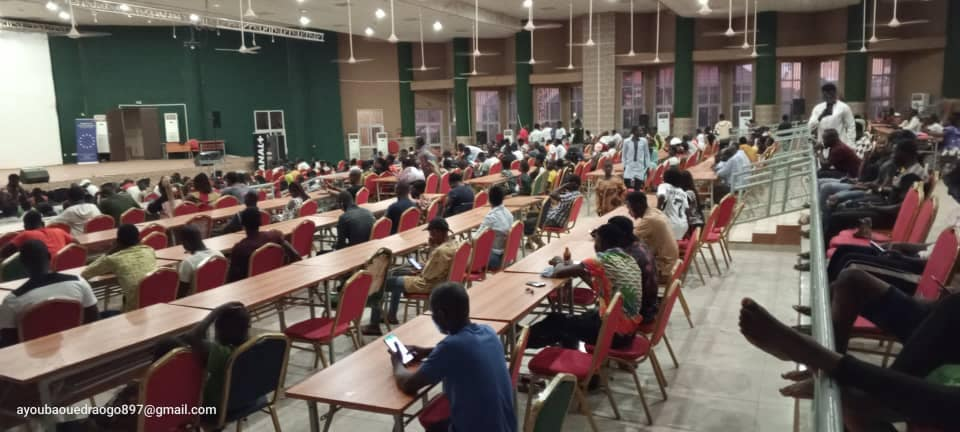
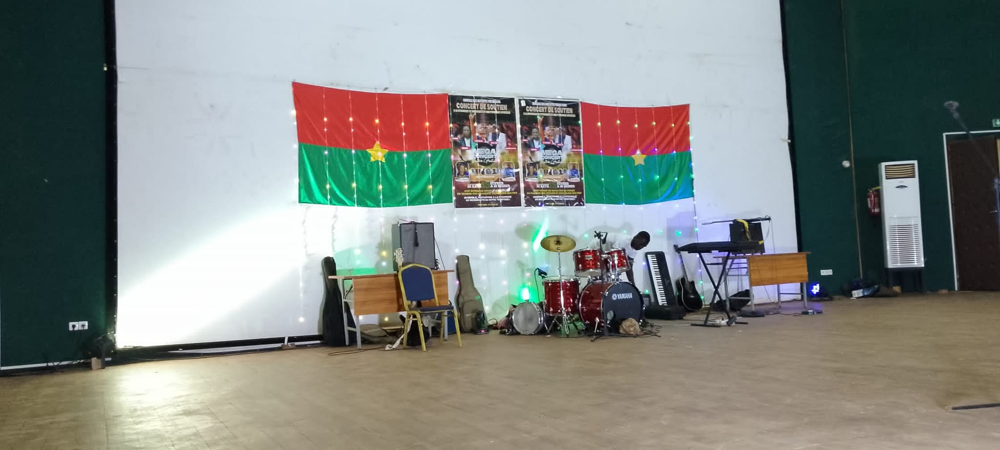
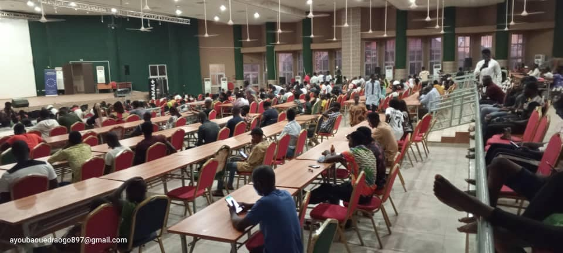
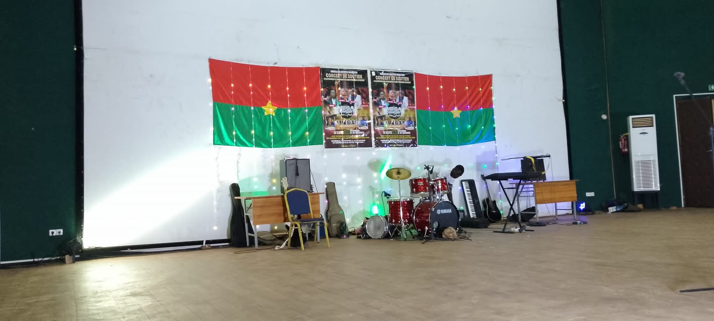
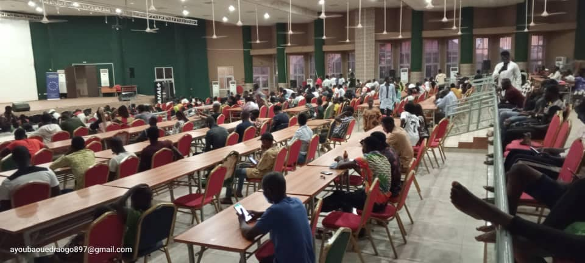
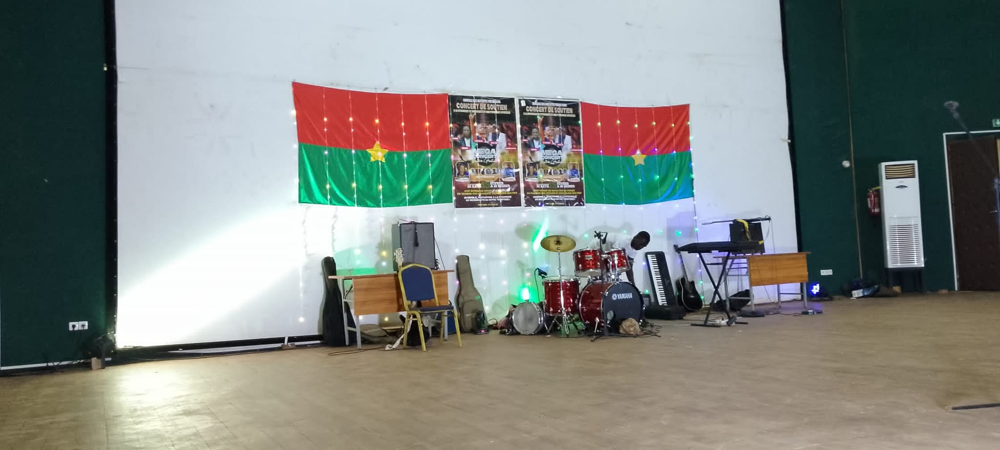

La Salle Polyvalente de la région du Centre-Nord est un espace communautaire situé à Kaya, non loin de la gare et du Grand Marché. Conçue pour l'accessibilité et la convivialité, elle accueille concerts, conférences, événements sociaux et rassemblements culturels.
Grâce à son architecture moderne et son implantation stratégique à proximité de l’aérodrome, elle joue un rôle central dans la vie sociale, culturelle et économique de la ville. Elle est un véritable moteur de cohésion et de développement local.

